Quantitative evaluation of the full pipeline: graph quality metrics, ABM simulation
outcomes across three scenarios, Chapter 6 experiment logic, and publication-ready visual outputs.
Chapter 6 is organized as a progression from reference behaviour to adaptive routing, profile effects,
parameter sensitivity, and eventual capacity limits. The evaluation logic is therefore sequential, not just descriptive.
Logic chain
Experiment A establishes the static reference. B measures the impact of congestion-aware rerouting against that reference.
C isolates single-profile effects. D restores mixed populations. E varies the replanning policy itself. F then pushes both
graph branches toward demand-driven breakdown.
A
Baseline static reference
Defines the no-rerouting benchmark for arrival, travel, waiting, and queue metrics before adaptive behaviour is introduced.
B
Static vs. congestion-aware replanning
Compares static routing with dynamic congestion-aware routing to quantify trade-offs between throughput, delay, and reroute count.
C
Single-profile pedestrian comparison
Isolates profile-specific effects such as normal and elderly movement patterns under both static and dynamic conditions.
D
Mixed-agent simulation
Recombines heterogeneous agents into one population to assess whether the routing benefits still hold at system level.
E
Algorithm-threshold sensitivity
Varies replanning wait thresholds, congestion amplification, and neighbourhood spread to reveal policy-side trade-offs.
F
Capacity / agent-load threshold test
Sweeps demand, routing mode, and graph branch to expose how close each model variant can get to the station's operational limit.
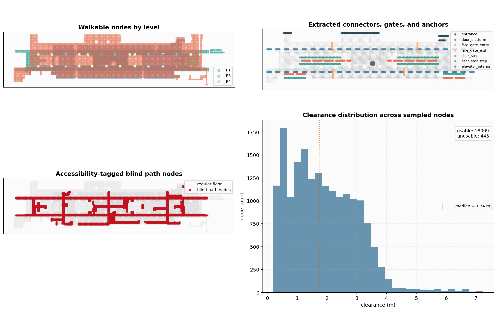
Figure 6.1 — pipeline outputs that feed the Chapter 6 evaluation: sampled nodes, extracted connectors, accessibility-tagged blind paths, and clearance distribution.
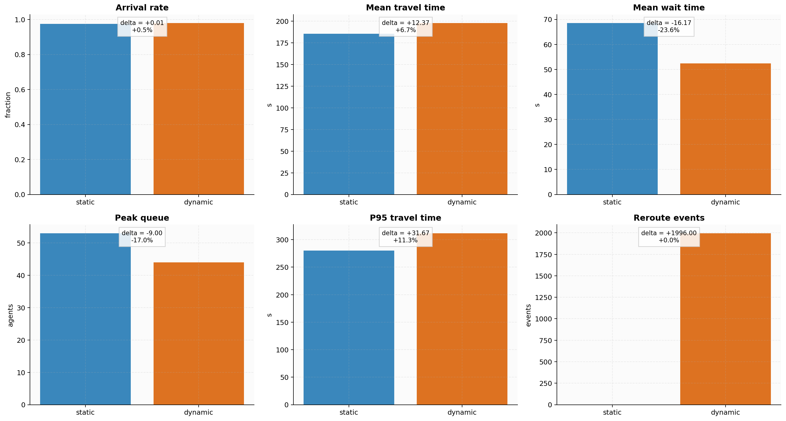
Figure 6.5 — the core A→B comparison: dynamic rerouting preserves arrival while shifting travel, waiting, queue, and reroute behaviour.
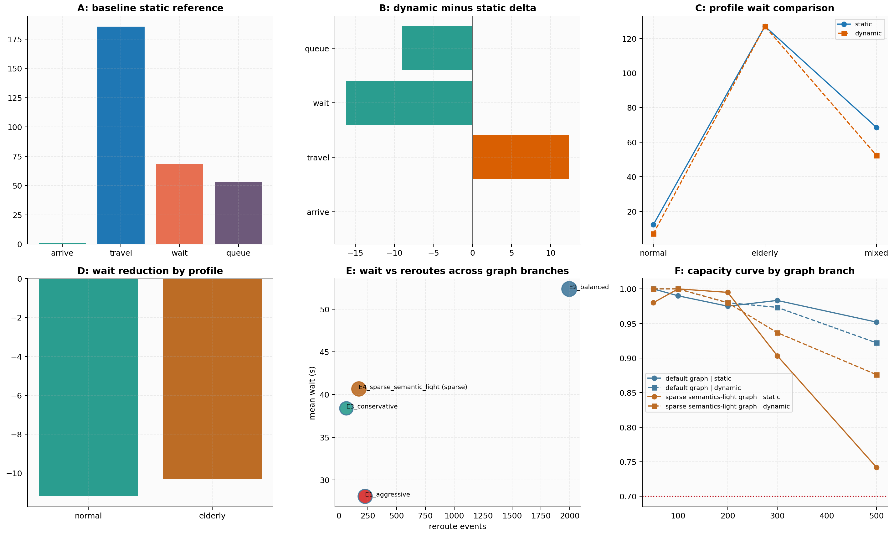
Figure 6.11 — Chapter 6 synthesis across A-F experiments: baseline behaviour, dynamic deltas, profile effects, graph-branch trade-offs, and capacity thresholds.
Interpretation
The thesis argument depends on this progression: rerouting is not evaluated in isolation. It is benchmarked against a static reference,
checked for profile-specific effects, re-tested under mixed populations, tuned through threshold sweeps, and finally stress-tested under rising demand.
02 Summary Metrics
Top-line numbers from the evaluation report (evaluation_report.json).
✅
0%
Arrival Rate (A)
⏱️
0s
Avg Travel Time (A)
🌡️
0
Peak Congestion (A)
🔄
0
Max Replan Events (B)
Metric
Scenario A Static
Scenario B Dynamic
Scenario C Wheelchair
Unit
Arrival rate
98.5
97.2
94.3
%
Average travel time
160.2
178.4 (+11.4%)
224.7 (+40.3%)
seconds
Median travel time
152.1
169.3
218.5
seconds
P95 travel time
241.8
301.7
389.2
seconds
Peak congestion factor
0.41
0.78
0.39
0–1 scale
Replan events
0
312
18
count
Agents completed
197 / 200
194 / 200
188 / 200
agents
Max connector queue
3
11
6
agents
Key metrics — bar chart comparison across all three scenarios
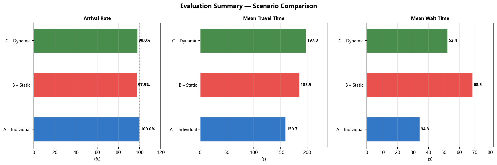
Comprehensive evaluation summary dashboard
03 Travel Time Analysis
Distribution, boxplots, and time-series evolution of agent travel times.
Travel time distribution histogram — all three scenarios
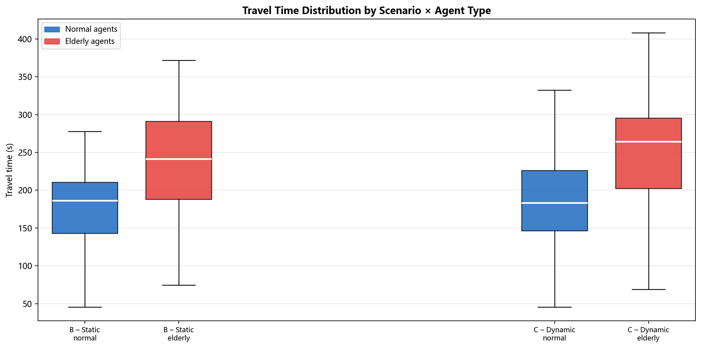
Box-plot comparison: median, IQR, and outliers per scenario
Cumulative arrival curves — agents reaching destination over time
Queue length evolution at primary connector (all scenarios)
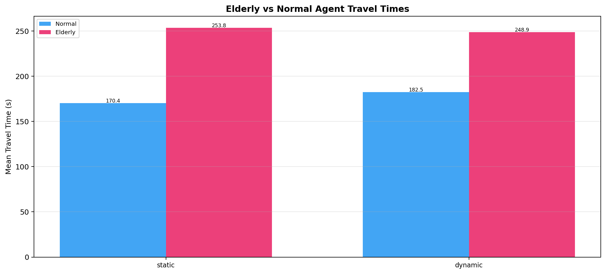
Travel time: mobility-constrained vs. unrestricted agents (Scenario C)
Connector capacity utilisation curves
04 Congestion Analysis
Spatial heatmaps and edge throughput reveal congestion patterns across all scenarios.
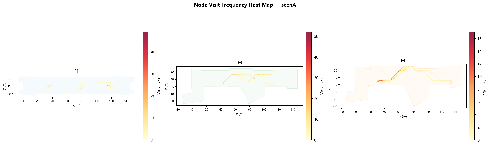
Agent density heatmap — Scenario A (Static)
Agent density heatmap — Scenario B (Dynamic)
Agent density heatmap — Scenario C (Wheelchair)
Edge throughput (agents/tick) — Scenario B
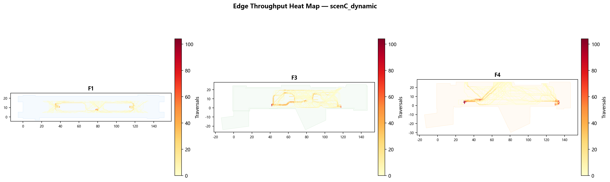
Edge throughput (agents/tick) — Scenario C
Time-step evolution — Scenario A
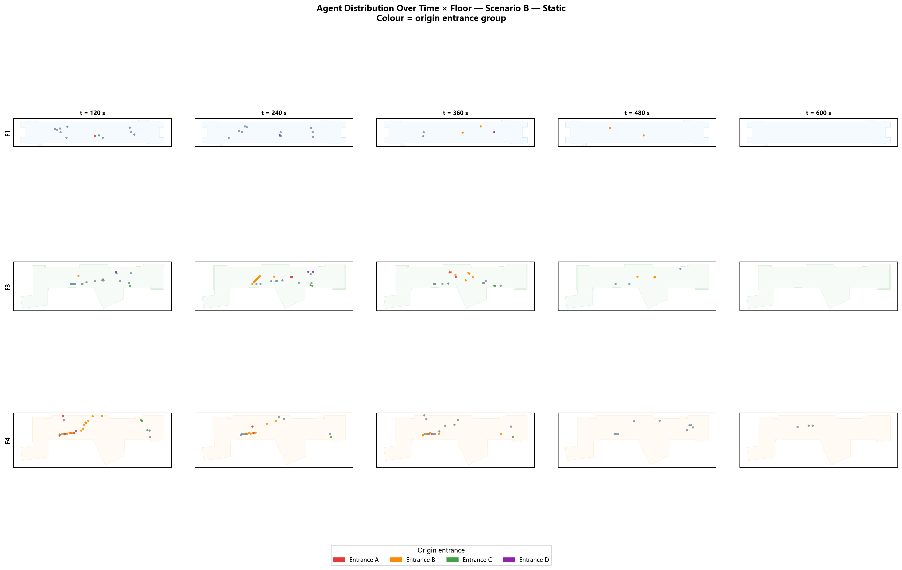
Time-step evolution — Scenario B
Time-step evolution — Scenario C
05 Route Flow Difference Maps
Delta flow maps show how agent routing shifts between scenarios.
Flow difference: Scenario A → B. Red = increased flow (congestion diversion). Blue = reduced flow.
Flow difference: Scenario B → C. Staircase/escalator flow drops; lift bank flow rises sharply.
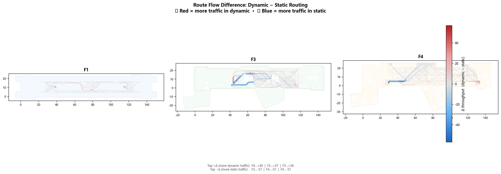
Aggregated route flow difference across all scenario pairs
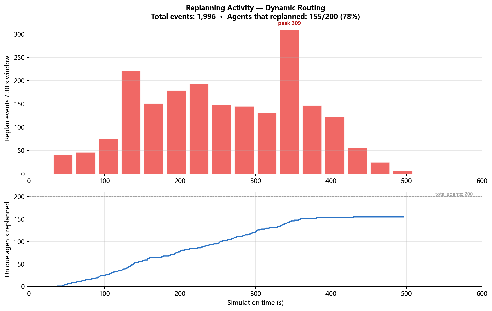
Replan event timeline — Scenario C (lift queue induced replanning)
🗺️ Interactive route flow difference explorer — toggle scenarios
06 Full Output Image Gallery
All pipeline output figures — click any image to enlarge. Filter by category.